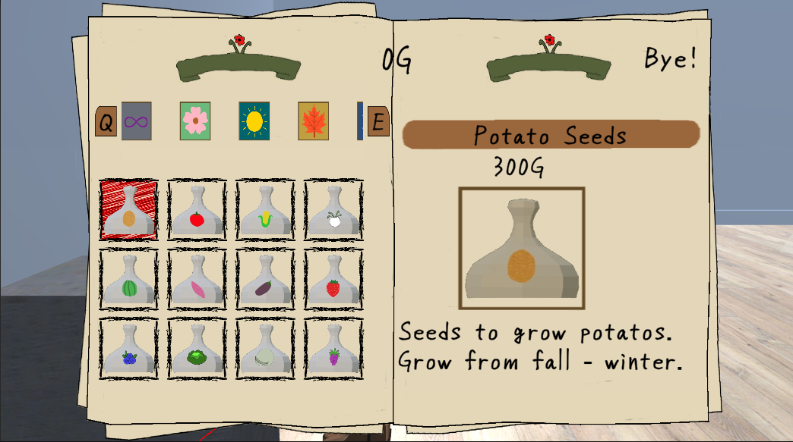
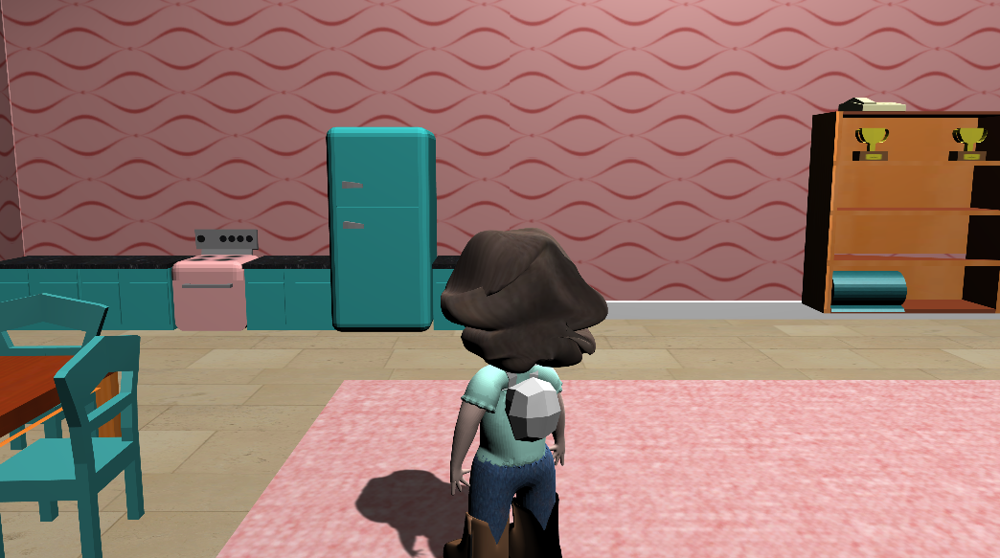

Story
- Your father left when you turned 18 and you haven't seen him since. Now, five years later, you recieve a letter in the mail from a place that sounds distantly familiar. It isn't your father, but someone who claims to be his old friend. They say your father passed away suddenly and he wanted nothing more than to show you the place he grew up. You can even stay if you want. Make a life for yourself out here on the farm. Or at least give it a shot.
- You aren't sure about it, but you have always wondered about the place that called your father away from you. So you decide to visit Halcyon Valley, and maybe even stay a while.
Features
- Build your farm...or don't? Raise crops and animals, or spend all day in the mine. It's your life to live.
- Meet and befriend interesting characters - With over 25 villagers present when you move to Halcyon Valley and 20 more possible in the following years, there's always something happening
- Rival Marriage - Certain villagers will marry at the end of Chapter 1 depending on your choices
- Rival Children - Some rivals will have children who will grow up along with your kid through the rest of the story
- Watch the town change over time - Villagers move in and out, kids are born and grow up, and the tiny town can grow into a bustling vista
Screenshots


×